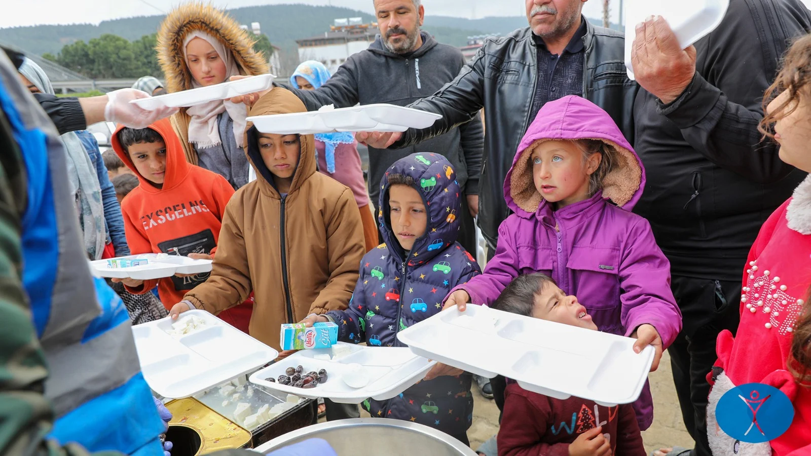

.jpg)

Since the 07 October 2023 attack on Israel in which families of hostages have continued to suffer, the Palestinian enclave of Gaza has faced a horrific and relentless assault. The entire population suffered repeated displacement. The UN estimates that 67,000 people have been killed, mostly women and children, and up to 20,000 are missing presumed dead under the rubble. A further 169,000 have been injured of whom 25% face life changing injuries including an estimated 4,000 children who have lost limbs. The health infrastructure has been decimated. 125 health facilities were damaged resulting in less than 39% of facilities being still partially functional with serious shortages in medication, anesthesia, pain relief and essential consumables. 1,722 health and aid workers were killed. 89% of water and sanitation facilities were destroyed. There was a blockade on food and water entering Gaza. As a result, 2 million people face famine and there are huge numbers of people with untreated medical conditions. Hundreds of thousands are suffering from diarrhea, chicken pox, meningitis, hepatitis A, jaundice, scabies and acute respiratory infection. The rebuilding will take a generation as 92% of homes, 88% of commercial facilities, 92% of schools and all of the power and water infrastructure has been destroyed. Through the crisis, Humanity First has continued to support the population through our team on the ground with hundreds of family tents, medical clinics, ad hoc schools, daily access to water and cooked meals. We have also provided clothing and bedding. Humanity First is a non-political NGO and is working for peace for all parties. We value all lives equally and wish for a lasting peace based on mutual respect and cooperation. Our local team in Gaza also collaborates with partners on the ground including the Red Crescent, United Nations, MAP, Anera and Save the Children. We ask for the support of our donors as we continue to provide life-saving assistance in many parts of the Gaza Strip.